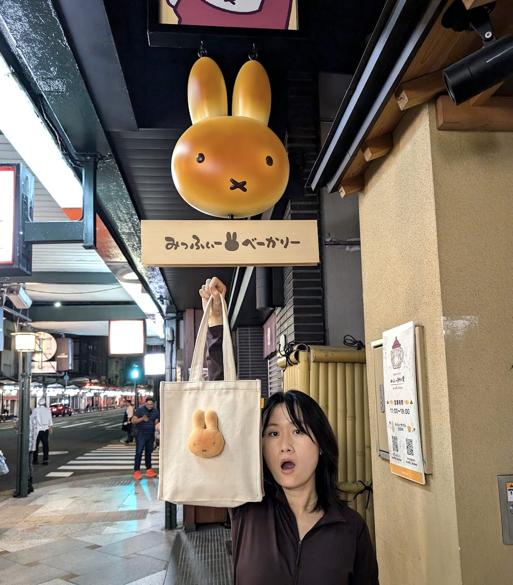
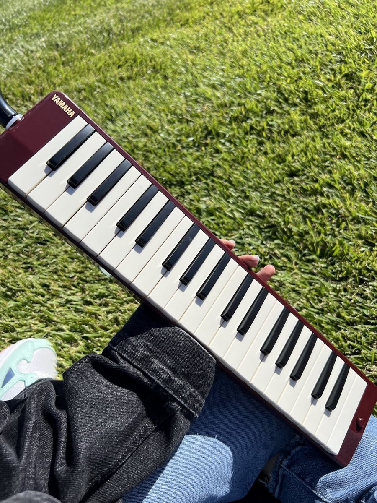

A textile, visual, and multimedia designer by training. A product designer by career. The two have never really been separate.

I started as a textile, visual, and multimedia designer, screen printing patterns, throwing ceramics, drawing from observation, working on set design and fabrication. That training shaped how I think about every product I've touched since: material, color, proportion, and the feeling of something considered.
I moved into product design because I wanted that same care to show up in software. Since then I've spent my career building developer platforms and enterprise systems, the unglamorous infrastructure that teams rely on every day. I care about craft at the level of pixels and interaction just as much as I once cared about it at the level of thread and clay.
Over the past year I've also built an AI-native workflow that lets me take a product from spec to shipped code independently, closing the gap between an idea and something real.
If you're curious to know more about my current approach to my design process, read here.
Outside work: I play melodica and busk at the park. I also collect plushies with a level of commitment that occasionally surprises me.
